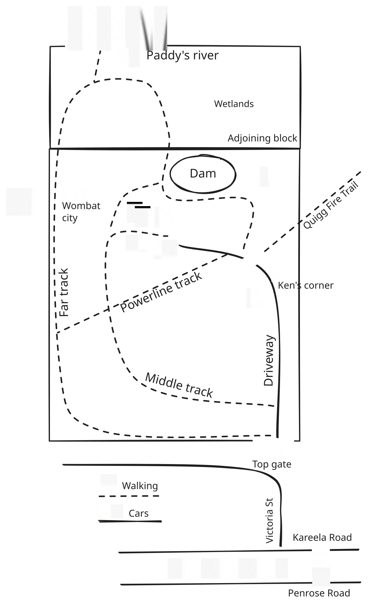

Before You Arrive
Before You Arrive
A quick hello
We're so glad you're staying with us. This page has the practical things worth knowing before you set off — the drive in, check-in, the gate and keys, what to pack, and who to call if you need us or anyone else.
Once you're here, there's a full guest guidebook on the kitchen table with everything else — the wood heater, the appliances, the wildlife, the walks. This page is just the headline version, for the drive down.
Karen & NicolasThe Burrows of Penrose
Tip: bookmark this page or save it to your home screen.
At a glance
On the way
About an hour and a half from Sydney, and roughly two hours from Canberra. The run down the Hume is straightforward — it's the last twenty minutes, once you turn off toward Penrose, that starts to feel like arriving somewhere.
Turn into Victoria Street from Kareela Road — that's the only way in. Some GPS apps try to route you in via Quigg Fire Trail; it crosses a creek and is impassable to cars, so please ignore any suggestion to take it. If your directions app tries to send you that way, stick to Kareela Road instead.
Penrose village has no shop, no fuel and no coffee. The nearest supplies are in Bundanoon, about ten minutes away — The Village Grocer & Store (65 Railway Ave, daily 8.30 am–7.30 pm) and Westside Petroleum (61 Railway Ave, daily 6 am–10 pm). Full supermarkets are 20–25 minutes away in Moss Vale and Mittagong. Our advice: do the big shop on the way in — once you're through the gate you won't want to get back in the car.
Landing properly

The driveway is dark at night — drive slowly and you'll reach the house. The outdoor lights are on a timer and usually on by nightfall.
Once you're in
Packing list
The short version
Treat it like a friend's place. The full version is in the guidebook inside — here's what matters most before you arrive.
Living rural
A rural property runs a little differently to a house in town. Nothing here is difficult — just worth knowing before you arrive.
Every drop comes off the roof into the tanks. It's filtered and drinkable — use it as you would at home, with half an eye on the fact that it isn't limitless.
Only pee, poo and toilet paper. No wipes, ever — even ones labelled "flushable".
Kangaroos and wombats move at dawn and dusk, often without warning. Between about 4 pm and 8 pm, slow down on the local roads — if you see one, expect more behind it.
Check for a Total Fire Ban — the Fires Near Me NSW app, or rfs.nsw.gov.au. Our district is the Southern Highlands. Check on the day, not the night before.
Coverage is generally good here and across most of the Southern Highlands, though the last stretch of the drive in can be patchy — worth downloading directions or this page before you lose signal.
Give the call taker this address: The Burrows of Penrose, 170 Victoria Street, Penrose NSW 2579. Nearest cross street: Kareela Road. Then message us through the Airbnb app so we know what's happened and can help.
For anything less urgent — a question, something not quite right, or just to say hello — message us through the Airbnb app. We'd far rather hear from you early than have you uncomfortable.
Curious about the area?
Local wineries and tables, walks and waterfalls, the wildlife you might meet, and what's on while you're here — it's all on our website.
Explore the area guides Back to the website